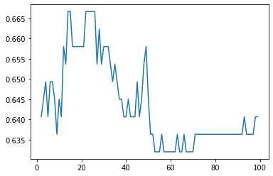
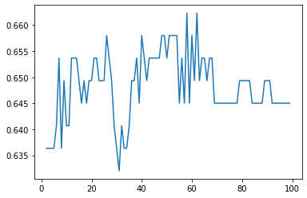

Implementasi Bagging
Contents
Implementasi Bagging#
import warnings
warnings.filterwarnings("ignore")
import pandas as pd
import numpy as np
from scipy.io.arff import loadarff
from io import StringIO, BytesIO
import urllib.request
url = 'https://archive.ics.uci.edu/ml/machine-learning-databases/00329/messidor_features.arff'
# raw_data = loadarff(url)
# df_data = pd.DataFrame(raw_data[0])
resp = urllib.request.urlopen(url)
data, meta = loadarff(StringIO(resp.read().decode('utf-8')))
col_names = []
for i in range(20):
if i == 0:
col_names.append('quality')
if i == 1:
col_names.append('prescreen')
if i >= 2 and i <= 7:
col_names.append('ma' + str(i))
if i >= 8 and i <= 15:
col_names.append('exudate' + str(i))
if i == 16:
col_names.append('euDist')
if i == 17:
col_names.append('diameter')
if i == 18:
col_names.append('amfm_class')
if i == 19:
col_names.append('label')
df = pd.DataFrame(data)
df.columns = [col_names]
df
| quality | prescreen | ma2 | ma3 | ma4 | ma5 | ma6 | ma7 | exudate8 | exudate9 | exudate10 | exudate11 | exudate12 | exudate13 | exudate14 | exudate15 | euDist | diameter | amfm_class | label | |
|---|---|---|---|---|---|---|---|---|---|---|---|---|---|---|---|---|---|---|---|---|
| 0 | 1.0 | 1.0 | 22.0 | 22.0 | 22.0 | 19.0 | 18.0 | 14.0 | 49.895756 | 17.775994 | 5.270920 | 0.771761 | 0.018632 | 0.006864 | 0.003923 | 0.003923 | 0.486903 | 0.100025 | 1.0 | b'0' |
| 1 | 1.0 | 1.0 | 24.0 | 24.0 | 22.0 | 18.0 | 16.0 | 13.0 | 57.709936 | 23.799994 | 3.325423 | 0.234185 | 0.003903 | 0.003903 | 0.003903 | 0.003903 | 0.520908 | 0.144414 | 0.0 | b'0' |
| 2 | 1.0 | 1.0 | 62.0 | 60.0 | 59.0 | 54.0 | 47.0 | 33.0 | 55.831441 | 27.993933 | 12.687485 | 4.852282 | 1.393889 | 0.373252 | 0.041817 | 0.007744 | 0.530904 | 0.128548 | 0.0 | b'1' |
| 3 | 1.0 | 1.0 | 55.0 | 53.0 | 53.0 | 50.0 | 43.0 | 31.0 | 40.467228 | 18.445954 | 9.118901 | 3.079428 | 0.840261 | 0.272434 | 0.007653 | 0.001531 | 0.483284 | 0.114790 | 0.0 | b'0' |
| 4 | 1.0 | 1.0 | 44.0 | 44.0 | 44.0 | 41.0 | 39.0 | 27.0 | 18.026254 | 8.570709 | 0.410381 | 0.000000 | 0.000000 | 0.000000 | 0.000000 | 0.000000 | 0.475935 | 0.123572 | 0.0 | b'1' |
| ... | ... | ... | ... | ... | ... | ... | ... | ... | ... | ... | ... | ... | ... | ... | ... | ... | ... | ... | ... | ... |
| 1146 | 1.0 | 1.0 | 34.0 | 34.0 | 34.0 | 33.0 | 31.0 | 24.0 | 6.071765 | 0.937472 | 0.031145 | 0.003115 | 0.000000 | 0.000000 | 0.000000 | 0.000000 | 0.537470 | 0.116795 | 0.0 | b'0' |
| 1147 | 1.0 | 1.0 | 49.0 | 49.0 | 49.0 | 49.0 | 45.0 | 37.0 | 63.197145 | 27.377668 | 8.067688 | 0.979548 | 0.001552 | 0.000000 | 0.000000 | 0.000000 | 0.516733 | 0.124190 | 0.0 | b'0' |
| 1148 | 1.0 | 0.0 | 49.0 | 48.0 | 48.0 | 45.0 | 43.0 | 33.0 | 30.461898 | 13.966980 | 1.763305 | 0.137858 | 0.011221 | 0.000000 | 0.000000 | 0.000000 | 0.560632 | 0.129843 | 0.0 | b'0' |
| 1149 | 1.0 | 1.0 | 39.0 | 36.0 | 29.0 | 23.0 | 13.0 | 7.0 | 40.525739 | 12.604947 | 4.740919 | 1.077570 | 0.563518 | 0.326860 | 0.239568 | 0.174584 | 0.485972 | 0.106690 | 1.0 | b'1' |
| 1150 | 1.0 | 1.0 | 7.0 | 7.0 | 7.0 | 7.0 | 7.0 | 5.0 | 69.423565 | 7.031843 | 1.750548 | 0.046597 | 0.021180 | 0.008472 | 0.000000 | 0.000000 | 0.556192 | 0.088957 | 0.0 | b'0' |
1151 rows × 20 columns
X = df.drop(columns=['label'])
X
| quality | prescreen | ma2 | ma3 | ma4 | ma5 | ma6 | ma7 | exudate8 | exudate9 | exudate10 | exudate11 | exudate12 | exudate13 | exudate14 | exudate15 | euDist | diameter | amfm_class | |
|---|---|---|---|---|---|---|---|---|---|---|---|---|---|---|---|---|---|---|---|
| 0 | 1.0 | 1.0 | 22.0 | 22.0 | 22.0 | 19.0 | 18.0 | 14.0 | 49.895756 | 17.775994 | 5.270920 | 0.771761 | 0.018632 | 0.006864 | 0.003923 | 0.003923 | 0.486903 | 0.100025 | 1.0 |
| 1 | 1.0 | 1.0 | 24.0 | 24.0 | 22.0 | 18.0 | 16.0 | 13.0 | 57.709936 | 23.799994 | 3.325423 | 0.234185 | 0.003903 | 0.003903 | 0.003903 | 0.003903 | 0.520908 | 0.144414 | 0.0 |
| 2 | 1.0 | 1.0 | 62.0 | 60.0 | 59.0 | 54.0 | 47.0 | 33.0 | 55.831441 | 27.993933 | 12.687485 | 4.852282 | 1.393889 | 0.373252 | 0.041817 | 0.007744 | 0.530904 | 0.128548 | 0.0 |
| 3 | 1.0 | 1.0 | 55.0 | 53.0 | 53.0 | 50.0 | 43.0 | 31.0 | 40.467228 | 18.445954 | 9.118901 | 3.079428 | 0.840261 | 0.272434 | 0.007653 | 0.001531 | 0.483284 | 0.114790 | 0.0 |
| 4 | 1.0 | 1.0 | 44.0 | 44.0 | 44.0 | 41.0 | 39.0 | 27.0 | 18.026254 | 8.570709 | 0.410381 | 0.000000 | 0.000000 | 0.000000 | 0.000000 | 0.000000 | 0.475935 | 0.123572 | 0.0 |
| ... | ... | ... | ... | ... | ... | ... | ... | ... | ... | ... | ... | ... | ... | ... | ... | ... | ... | ... | ... |
| 1146 | 1.0 | 1.0 | 34.0 | 34.0 | 34.0 | 33.0 | 31.0 | 24.0 | 6.071765 | 0.937472 | 0.031145 | 0.003115 | 0.000000 | 0.000000 | 0.000000 | 0.000000 | 0.537470 | 0.116795 | 0.0 |
| 1147 | 1.0 | 1.0 | 49.0 | 49.0 | 49.0 | 49.0 | 45.0 | 37.0 | 63.197145 | 27.377668 | 8.067688 | 0.979548 | 0.001552 | 0.000000 | 0.000000 | 0.000000 | 0.516733 | 0.124190 | 0.0 |
| 1148 | 1.0 | 0.0 | 49.0 | 48.0 | 48.0 | 45.0 | 43.0 | 33.0 | 30.461898 | 13.966980 | 1.763305 | 0.137858 | 0.011221 | 0.000000 | 0.000000 | 0.000000 | 0.560632 | 0.129843 | 0.0 |
| 1149 | 1.0 | 1.0 | 39.0 | 36.0 | 29.0 | 23.0 | 13.0 | 7.0 | 40.525739 | 12.604947 | 4.740919 | 1.077570 | 0.563518 | 0.326860 | 0.239568 | 0.174584 | 0.485972 | 0.106690 | 1.0 |
| 1150 | 1.0 | 1.0 | 7.0 | 7.0 | 7.0 | 7.0 | 7.0 | 5.0 | 69.423565 | 7.031843 | 1.750548 | 0.046597 | 0.021180 | 0.008472 | 0.000000 | 0.000000 | 0.556192 | 0.088957 | 0.0 |
1151 rows × 19 columns
Rumus prepocessing data Min Max#
\[
\displaystyle x = \frac{x_{i} - x_{min}}{x_{max} - x_{min}}
\]
from sklearn.preprocessing import MinMaxScaler
scaler = MinMaxScaler()
#scaler.fit(features)
#scaler.transform(features)
scaled = scaler.fit_transform(X)
features_names = X.columns.copy()
#features_names.remove('label')
scaled_features = pd.DataFrame(scaled, columns=features_names)
scaled_features.head(10)
| quality | prescreen | ma2 | ma3 | ma4 | ma5 | ma6 | ma7 | exudate8 | exudate9 | exudate10 | exudate11 | exudate12 | exudate13 | exudate14 | exudate15 | euDist | diameter | amfm_class | |
|---|---|---|---|---|---|---|---|---|---|---|---|---|---|---|---|---|---|---|---|
| 0 | 1.0 | 1.0 | 0.140000 | 0.160305 | 0.176471 | 0.173077 | 0.177083 | 0.147727 | 0.122764 | 0.106359 | 0.049693 | 0.012913 | 0.000362 | 0.000342 | 0.000661 | 0.001271 | 0.530801 | 0.261133 | 1.0 |
| 1 | 1.0 | 1.0 | 0.153333 | 0.175573 | 0.176471 | 0.163462 | 0.156250 | 0.136364 | 0.142126 | 0.142403 | 0.031351 | 0.003918 | 0.000076 | 0.000194 | 0.000657 | 0.001264 | 0.682302 | 0.536341 | 0.0 |
| 2 | 1.0 | 1.0 | 0.406667 | 0.450382 | 0.487395 | 0.509615 | 0.479167 | 0.363636 | 0.137472 | 0.167497 | 0.119614 | 0.081188 | 0.027106 | 0.018571 | 0.007043 | 0.002509 | 0.726836 | 0.437973 | 0.0 |
| 3 | 1.0 | 1.0 | 0.360000 | 0.396947 | 0.436975 | 0.471154 | 0.437500 | 0.340909 | 0.099403 | 0.110368 | 0.085971 | 0.051525 | 0.016340 | 0.013555 | 0.001289 | 0.000496 | 0.514678 | 0.352675 | 0.0 |
| 4 | 1.0 | 1.0 | 0.286667 | 0.328244 | 0.361345 | 0.384615 | 0.395833 | 0.295455 | 0.043799 | 0.051281 | 0.003869 | 0.000000 | 0.000000 | 0.000000 | 0.000000 | 0.000000 | 0.481936 | 0.407122 | 0.0 |
| 5 | 1.0 | 1.0 | 0.286667 | 0.320611 | 0.336134 | 0.384615 | 0.375000 | 0.318182 | 0.069395 | 0.041498 | 0.021738 | 0.005417 | 0.000000 | 0.000000 | 0.000000 | 0.000000 | 0.601764 | 0.426770 | 0.0 |
| 6 | 1.0 | 0.0 | 0.186667 | 0.213740 | 0.235294 | 0.250000 | 0.250000 | 0.170455 | 0.037412 | 0.054531 | 0.015400 | 0.000000 | 0.000000 | 0.000000 | 0.000000 | 0.000000 | 0.775126 | 0.506339 | 0.0 |
| 7 | 1.0 | 1.0 | 0.033333 | 0.038168 | 0.042017 | 0.048077 | 0.010417 | 0.000000 | 0.050374 | 0.056828 | 0.011536 | 0.002516 | 0.000000 | 0.000000 | 0.000000 | 0.000000 | 0.929166 | 0.081622 | 1.0 |
| 8 | 1.0 | 1.0 | 0.140000 | 0.152672 | 0.142857 | 0.134615 | 0.125000 | 0.102273 | 0.164381 | 0.140880 | 0.057991 | 0.008305 | 0.000000 | 0.000000 | 0.000000 | 0.000000 | 0.589477 | 0.365093 | 0.0 |
| 9 | 1.0 | 1.0 | 0.520000 | 0.564885 | 0.605042 | 0.673077 | 0.656250 | 0.522727 | 0.053997 | 0.060159 | 0.008246 | 0.001670 | 0.000455 | 0.000000 | 0.000000 | 0.000000 | 0.860738 | 0.317608 | 0.0 |
Save model prepocessing#
import joblib
filename = "norm.sav"
joblib.dump(scaler, filename)
['norm.sav']
y = df['label'].values
Encoder Label#
from sklearn import preprocessing
le = preprocessing.LabelEncoder()
y_baru = le.fit_transform(y)
y_baru
array([0, 0, 1, ..., 0, 1, 0])
from sklearn.model_selection import train_test_split
X_train, X_test, y_train, y_test=train_test_split(scaled_features, y_baru, test_size=0.2, random_state=1)
from sklearn.naive_bayes import GaussianNB
# from sklearn.datasets import make_classification
# X, y = make_classification(n_samples=100, n_features=4,
# n_informative=2, n_redundant=0,
# random_state=0, shuffle=False)
gnb = GaussianNB()
gnb = gnb.fit(X_train, y_train)
# Predicting the training set
y_train_pred = gnb.predict(X_train)
# Predicting the test set
y_test_pred = gnb.predict(X_test)
from sklearn.metrics import accuracy_score
gnb_train = accuracy_score(y_train, y_train_pred)
gnb_test = accuracy_score(y_test, y_test_pred)
# print(f’Gausin train/test accuracies: {gnb_train:.3f}/{gnb_test:.3f}’)
print(f'Gausin train/test accuracies: {gnb_train:.3f}/{gnb_test:.3f}')
Gausin train/test accuracies: 0.640/0.632
# bag = BaggingClassifier(
# base_estimator=gnb, # knn,gnb, jst
# n_estimators=10,
# random_state=0)
from sklearn.ensemble import RandomForestClassifier
clf = RandomForestClassifier(n_estimators=14, max_depth=2, random_state=0)
# bag = bag.fit(X_train, y_train)
clf = clf.fit(X_train, y_train)
n = list(range(2,100))
acuracy = []
for i in n:
clf = RandomForestClassifier(n_estimators=i, max_depth=2, random_state=0)
clf = clf.fit(X_train, y_train)
y_test_pred = clf.predict(X_test)
bag_test = accuracy_score(y_test, y_test_pred)
print(f'acuracy n = {i} = {bag_test}')
acuracy.append(bag_test)
acuracy n = 2 = 0.6406926406926406
acuracy n = 3 = 0.645021645021645
acuracy n = 4 = 0.6493506493506493
acuracy n = 5 = 0.6406926406926406
acuracy n = 6 = 0.6493506493506493
acuracy n = 7 = 0.6493506493506493
acuracy n = 8 = 0.645021645021645
acuracy n = 9 = 0.6363636363636364
acuracy n = 10 = 0.645021645021645
acuracy n = 11 = 0.6406926406926406
acuracy n = 12 = 0.658008658008658
acuracy n = 13 = 0.6536796536796536
acuracy n = 14 = 0.6666666666666666
acuracy n = 15 = 0.6666666666666666
acuracy n = 16 = 0.658008658008658
acuracy n = 17 = 0.658008658008658
acuracy n = 18 = 0.658008658008658
acuracy n = 19 = 0.658008658008658
acuracy n = 20 = 0.658008658008658
acuracy n = 21 = 0.658008658008658
acuracy n = 22 = 0.6666666666666666
acuracy n = 23 = 0.6666666666666666
acuracy n = 24 = 0.6666666666666666
acuracy n = 25 = 0.6666666666666666
acuracy n = 26 = 0.6666666666666666
acuracy n = 27 = 0.6536796536796536
acuracy n = 28 = 0.6623376623376623
acuracy n = 29 = 0.6536796536796536
acuracy n = 30 = 0.658008658008658
acuracy n = 31 = 0.658008658008658
acuracy n = 32 = 0.658008658008658
acuracy n = 33 = 0.6536796536796536
acuracy n = 34 = 0.6493506493506493
acuracy n = 35 = 0.6536796536796536
acuracy n = 36 = 0.6493506493506493
acuracy n = 37 = 0.645021645021645
acuracy n = 38 = 0.645021645021645
acuracy n = 39 = 0.6406926406926406
acuracy n = 40 = 0.6406926406926406
acuracy n = 41 = 0.645021645021645
acuracy n = 42 = 0.6406926406926406
acuracy n = 43 = 0.6406926406926406
acuracy n = 44 = 0.6406926406926406
acuracy n = 45 = 0.6493506493506493
acuracy n = 46 = 0.6406926406926406
acuracy n = 47 = 0.645021645021645
acuracy n = 48 = 0.6536796536796536
acuracy n = 49 = 0.658008658008658
acuracy n = 50 = 0.645021645021645
acuracy n = 51 = 0.6363636363636364
acuracy n = 52 = 0.6363636363636364
acuracy n = 53 = 0.6320346320346321
acuracy n = 54 = 0.6320346320346321
acuracy n = 55 = 0.6320346320346321
acuracy n = 56 = 0.6363636363636364
acuracy n = 57 = 0.6320346320346321
acuracy n = 58 = 0.6320346320346321
acuracy n = 59 = 0.6320346320346321
acuracy n = 60 = 0.6320346320346321
acuracy n = 61 = 0.6320346320346321
acuracy n = 62 = 0.6320346320346321
acuracy n = 63 = 0.6363636363636364
acuracy n = 64 = 0.6320346320346321
acuracy n = 65 = 0.6320346320346321
acuracy n = 66 = 0.6363636363636364
acuracy n = 67 = 0.6320346320346321
acuracy n = 68 = 0.6320346320346321
acuracy n = 69 = 0.6320346320346321
acuracy n = 70 = 0.6320346320346321
acuracy n = 71 = 0.6363636363636364
acuracy n = 72 = 0.6363636363636364
acuracy n = 73 = 0.6363636363636364
acuracy n = 74 = 0.6363636363636364
acuracy n = 75 = 0.6363636363636364
acuracy n = 76 = 0.6363636363636364
acuracy n = 77 = 0.6363636363636364
acuracy n = 78 = 0.6363636363636364
acuracy n = 79 = 0.6363636363636364
acuracy n = 80 = 0.6363636363636364
acuracy n = 81 = 0.6363636363636364
acuracy n = 82 = 0.6363636363636364
acuracy n = 83 = 0.6363636363636364
acuracy n = 84 = 0.6363636363636364
acuracy n = 85 = 0.6363636363636364
acuracy n = 86 = 0.6363636363636364
acuracy n = 87 = 0.6363636363636364
acuracy n = 88 = 0.6363636363636364
acuracy n = 89 = 0.6363636363636364
acuracy n = 90 = 0.6363636363636364
acuracy n = 91 = 0.6363636363636364
acuracy n = 92 = 0.6363636363636364
acuracy n = 93 = 0.6406926406926406
acuracy n = 94 = 0.6363636363636364
acuracy n = 95 = 0.6363636363636364
acuracy n = 96 = 0.6363636363636364
acuracy n = 97 = 0.6363636363636364
acuracy n = 98 = 0.6406926406926406
acuracy n = 99 = 0.6406926406926406
import matplotlib.pyplot as plt
# n = list(range(2,500))
plt.plot(n, acuracy)
plt.show()

max(acuracy)
# stacking
0.6666666666666666
print(f'Akurasi terbaik di iterasi {(acuracy.index(max(acuracy))-1)}')
Akurasi terbaik di iterasi 11
from sklearn.ensemble import BaggingClassifier
n = list(range(2,100))
acuracy = []
for i in n:
bag = BaggingClassifier(
base_estimator=gnb, # knn,gnb, jst
n_estimators=i,
random_state=0)
bag = bag.fit(X_train, y_train)
y_test_pred = bag.predict(X_test)
bag_test = accuracy_score(y_test, y_test_pred)
print(f'acuracy n = {i} = {bag_test}')
acuracy.append(bag_test)
max(acuracy)
acuracy n = 2 = 0.6363636363636364
acuracy n = 3 = 0.6363636363636364
acuracy n = 4 = 0.6363636363636364
acuracy n = 5 = 0.6363636363636364
acuracy n = 6 = 0.6406926406926406
acuracy n = 7 = 0.6536796536796536
acuracy n = 8 = 0.6363636363636364
acuracy n = 9 = 0.6493506493506493
acuracy n = 10 = 0.6406926406926406
acuracy n = 11 = 0.6406926406926406
acuracy n = 12 = 0.6536796536796536
acuracy n = 13 = 0.6536796536796536
acuracy n = 14 = 0.6536796536796536
acuracy n = 15 = 0.6493506493506493
acuracy n = 16 = 0.645021645021645
acuracy n = 17 = 0.6493506493506493
acuracy n = 18 = 0.645021645021645
acuracy n = 19 = 0.6493506493506493
acuracy n = 20 = 0.6493506493506493
acuracy n = 21 = 0.6536796536796536
acuracy n = 22 = 0.6536796536796536
acuracy n = 23 = 0.6493506493506493
acuracy n = 24 = 0.6493506493506493
acuracy n = 25 = 0.6493506493506493
acuracy n = 26 = 0.658008658008658
acuracy n = 27 = 0.6536796536796536
acuracy n = 28 = 0.6493506493506493
acuracy n = 29 = 0.6406926406926406
acuracy n = 30 = 0.6363636363636364
acuracy n = 31 = 0.6320346320346321
acuracy n = 32 = 0.6406926406926406
acuracy n = 33 = 0.6363636363636364
acuracy n = 34 = 0.6363636363636364
acuracy n = 35 = 0.6406926406926406
acuracy n = 36 = 0.6493506493506493
acuracy n = 37 = 0.6493506493506493
acuracy n = 38 = 0.6536796536796536
acuracy n = 39 = 0.645021645021645
acuracy n = 40 = 0.658008658008658
acuracy n = 41 = 0.6536796536796536
acuracy n = 42 = 0.6493506493506493
acuracy n = 43 = 0.6536796536796536
acuracy n = 44 = 0.6536796536796536
acuracy n = 45 = 0.6536796536796536
acuracy n = 46 = 0.6536796536796536
acuracy n = 47 = 0.6536796536796536
acuracy n = 48 = 0.658008658008658
acuracy n = 49 = 0.658008658008658
acuracy n = 50 = 0.6536796536796536
acuracy n = 51 = 0.658008658008658
acuracy n = 52 = 0.658008658008658
acuracy n = 53 = 0.658008658008658
acuracy n = 54 = 0.658008658008658
acuracy n = 55 = 0.645021645021645
acuracy n = 56 = 0.6536796536796536
acuracy n = 57 = 0.645021645021645
acuracy n = 58 = 0.6623376623376623
acuracy n = 59 = 0.645021645021645
acuracy n = 60 = 0.658008658008658
acuracy n = 61 = 0.6493506493506493
acuracy n = 62 = 0.6623376623376623
acuracy n = 63 = 0.6493506493506493
acuracy n = 64 = 0.6536796536796536
acuracy n = 65 = 0.6536796536796536
acuracy n = 66 = 0.6493506493506493
acuracy n = 67 = 0.6536796536796536
acuracy n = 68 = 0.6536796536796536
acuracy n = 69 = 0.645021645021645
acuracy n = 70 = 0.645021645021645
acuracy n = 71 = 0.645021645021645
acuracy n = 72 = 0.645021645021645
acuracy n = 73 = 0.645021645021645
acuracy n = 74 = 0.645021645021645
acuracy n = 75 = 0.645021645021645
acuracy n = 76 = 0.645021645021645
acuracy n = 77 = 0.645021645021645
acuracy n = 78 = 0.645021645021645
acuracy n = 79 = 0.6493506493506493
acuracy n = 80 = 0.6493506493506493
acuracy n = 81 = 0.6493506493506493
acuracy n = 82 = 0.6493506493506493
acuracy n = 83 = 0.6493506493506493
acuracy n = 84 = 0.645021645021645
acuracy n = 85 = 0.645021645021645
acuracy n = 86 = 0.645021645021645
acuracy n = 87 = 0.645021645021645
acuracy n = 88 = 0.645021645021645
acuracy n = 89 = 0.6493506493506493
acuracy n = 90 = 0.6493506493506493
acuracy n = 91 = 0.6493506493506493
acuracy n = 92 = 0.645021645021645
acuracy n = 93 = 0.645021645021645
acuracy n = 94 = 0.645021645021645
acuracy n = 95 = 0.645021645021645
acuracy n = 96 = 0.645021645021645
acuracy n = 97 = 0.645021645021645
acuracy n = 98 = 0.645021645021645
acuracy n = 99 = 0.645021645021645
0.6623376623376623
import matplotlib.pyplot as plt
# n = list(range(2,500))
plt.plot(n, acuracy)
plt.show()

max(acuracy)
0.6623376623376623
print(f'Akurasi terbaik di iterasi {(acuracy.index(max(acuracy))-1)}')
Akurasi terbaik di iterasi 55
Predict#
# Predicting the training set
# y_train_pred = clf.predict(X_train)
# Predicting the test set
y_test_pred = clf.predict(X_test)
# bag_train = accuracy_score(y_train, y_train_pred)
bag_test = accuracy_score(y_test, y_test_pred)
print(f'Gausin test accuracies: {bag_test:.3f}')
Gausin test accuracies: 0.641
Implementasi#
a = np.array(df.iloc[:10,:-1])
test_data = np.array(a).reshape(10,-1)
test_data.shape
(10, 19)
scaler = joblib.load(filename)
test_d = scaler.fit_transform(test_data)
pd.DataFrame(test_d)
| 0 | 1 | 2 | 3 | 4 | 5 | 6 | 7 | 8 | 9 | 10 | 11 | 12 | 13 | 14 | 15 | 16 | 17 | 18 | |
|---|---|---|---|---|---|---|---|---|---|---|---|---|---|---|---|---|---|---|---|
| 0 | 0.0 | 1.0 | 0.219178 | 0.231884 | 0.238806 | 0.200000 | 0.258065 | 0.282609 | 0.672228 | 0.514778 | 0.395903 | 0.159051 | 0.013367 | 0.018390 | 0.093814 | 0.506586 | 0.109262 | 0.394775 | 1.0 |
| 1 | 0.0 | 1.0 | 0.246575 | 0.260870 | 0.238806 | 0.184615 | 0.225806 | 0.260870 | 0.824719 | 0.800841 | 0.237437 | 0.048263 | 0.002800 | 0.010457 | 0.093335 | 0.504003 | 0.448014 | 1.000000 | 0.0 |
| 2 | 0.0 | 1.0 | 0.767123 | 0.782609 | 0.791045 | 0.738462 | 0.725806 | 0.695652 | 0.788061 | 1.000000 | 1.000000 | 1.000000 | 1.000000 | 1.000000 | 1.000000 | 1.000000 | 0.547593 | 0.783674 | 0.0 |
| 3 | 0.0 | 1.0 | 0.671233 | 0.681159 | 0.701493 | 0.676923 | 0.661290 | 0.652174 | 0.488234 | 0.546593 | 0.709330 | 0.634635 | 0.602818 | 0.729893 | 0.183012 | 0.197701 | 0.073210 | 0.596090 | 0.0 |
| 4 | 0.0 | 1.0 | 0.520548 | 0.550725 | 0.567164 | 0.538462 | 0.596774 | 0.565217 | 0.050306 | 0.077645 | 0.000000 | 0.000000 | 0.000000 | 0.000000 | 0.000000 | 0.000000 | 0.000000 | 0.715828 | 0.0 |
| 5 | 0.0 | 1.0 | 0.520548 | 0.536232 | 0.522388 | 0.538462 | 0.564516 | 0.608696 | 0.251895 | 0.000000 | 0.154384 | 0.066716 | 0.000000 | 0.000000 | 0.000000 | 0.000000 | 0.267934 | 0.759036 | 0.0 |
| 6 | 0.0 | 0.0 | 0.315068 | 0.333333 | 0.343284 | 0.323077 | 0.370968 | 0.326087 | 0.000000 | 0.103436 | 0.099625 | 0.000000 | 0.000000 | 0.000000 | 0.000000 | 0.000000 | 0.655569 | 0.934022 | 0.0 |
| 7 | 0.0 | 1.0 | 0.000000 | 0.000000 | 0.000000 | 0.000000 | 0.000000 | 0.000000 | 0.102086 | 0.121669 | 0.066244 | 0.030992 | 0.000000 | 0.000000 | 0.000000 | 0.000000 | 1.000000 | 0.000000 | 1.0 |
| 8 | 0.0 | 1.0 | 0.219178 | 0.217391 | 0.179104 | 0.138462 | 0.177419 | 0.195652 | 1.000000 | 0.788758 | 0.467597 | 0.102297 | 0.000000 | 0.000000 | 0.000000 | 0.000000 | 0.240459 | 0.623400 | 0.0 |
| 9 | 0.0 | 1.0 | 1.000000 | 1.000000 | 1.000000 | 1.000000 | 1.000000 | 1.000000 | 0.130619 | 0.148101 | 0.037814 | 0.020564 | 0.016778 | 0.000000 | 0.000000 | 0.000000 | 0.846996 | 0.518972 | 0.0 |
y_test_imp = clf.predict(test_d)
y_test_imp
array([1, 1, 1, 1, 1, 1, 0, 0, 0, 1])